Los moldes de herrería son un conjunto de objetos que se utilizan para personalizar la armadura y mejorar el equipamiento de diamante a uno de netherita.
Los moldes de herrería se pueden encontrar en varias estructuras y se pueden duplicar utilizando siete diamantes y un objeto basado en el molde.
Nombre del molde
Imagen del molde
Receta de duplicacion
Diseño en armadura
Estructura en la que se encuentra
Mejora de netherita
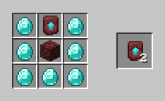
No tiene diseño
Se encuentraen las bastion del nether
Diseño de armadura centinela
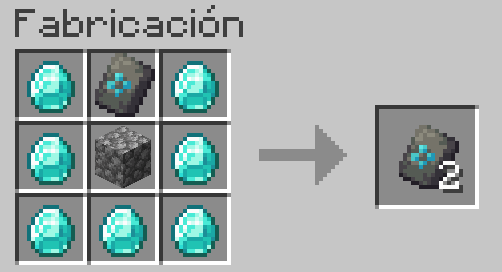
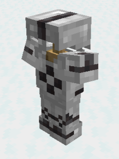
Se encuentra en puestos de saqueadores.
Diseño de armadura vex
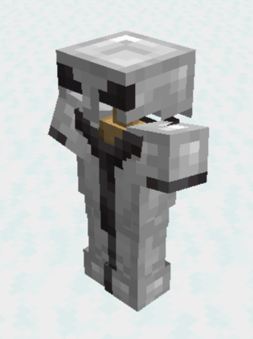
Se encuentra en las masiones.
Diseño de armadura salvaje
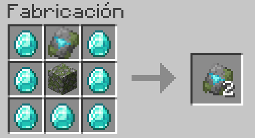
Se encuentra en los templos de la jungla.
Diseño de armadura costera
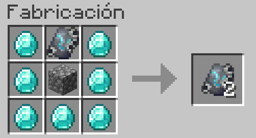
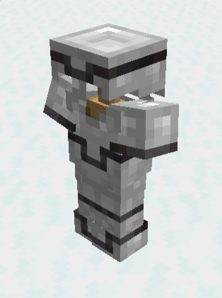
Se puede encontrar en los barcos undidos del mar
Diseño de armadura dunas.
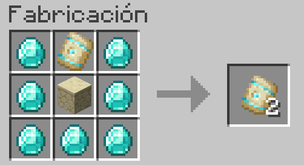
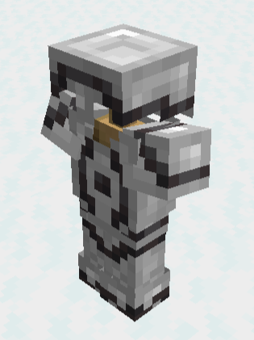
Se encuentra en los templos del desierto.
Diseño de armadura buscacaminos
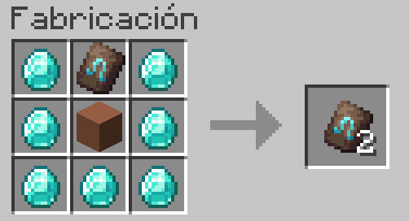
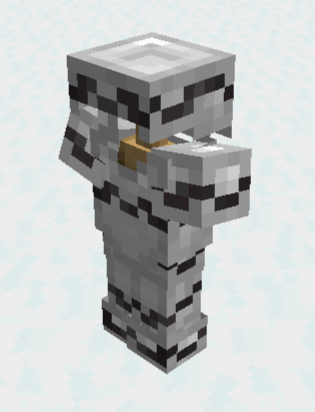
Se encuentra en zonas de arqueologia.
Diseño de armadura elevacion
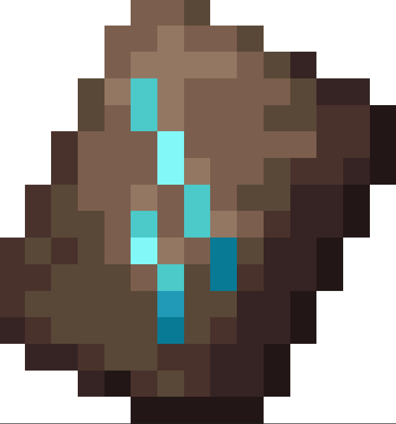
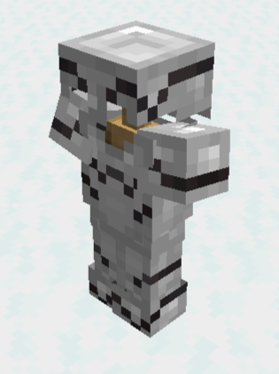
Se encuentra en zonas de arqueologia.
Diseño de armadura modelador
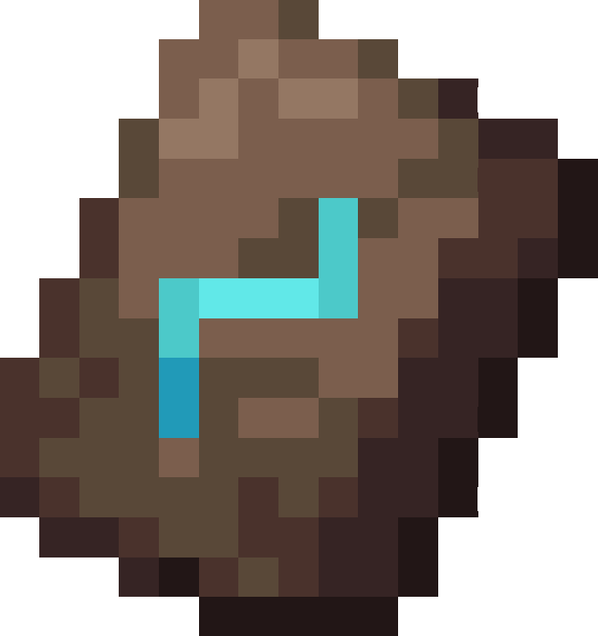
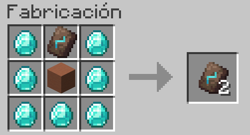
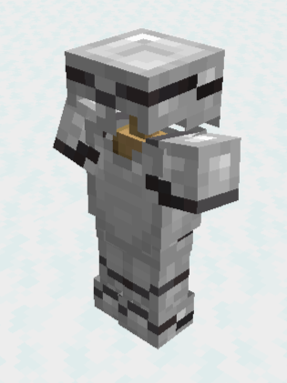
Se encuentra en zonas de arqueologia.
Diseño de armadura anfitrion
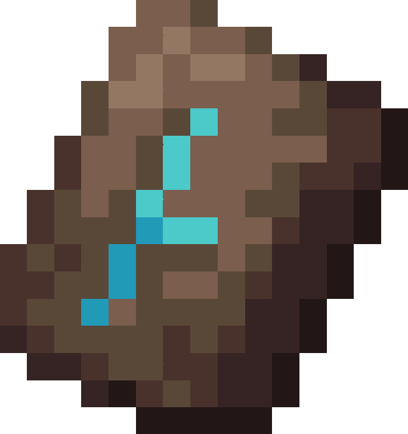
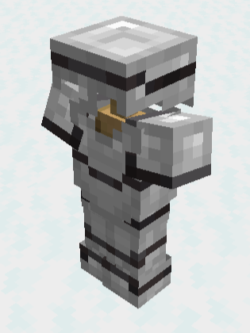
Se encuentra en zonas de arqueologia.
Diseño de armadura warden
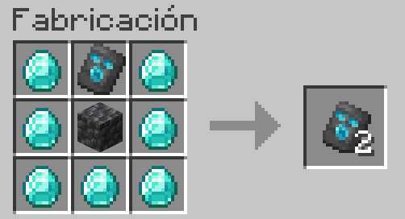
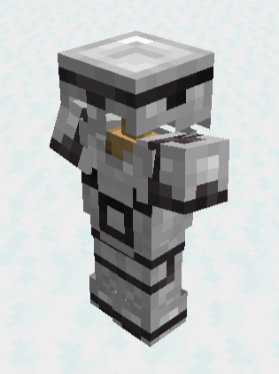
Se encuentra en las ciudadas antiguas.
Diseño de armadura silencio
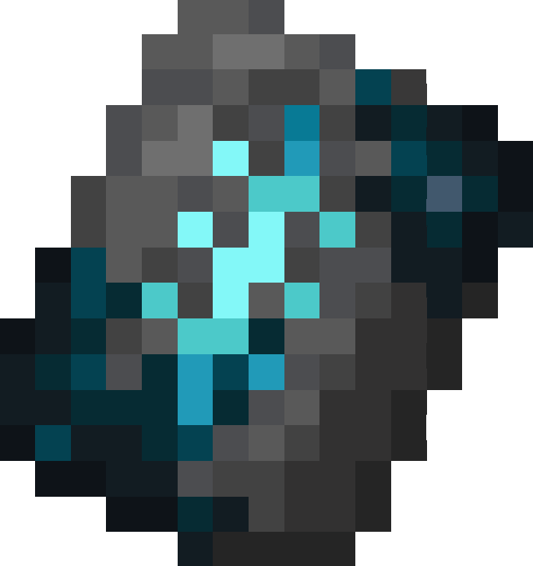
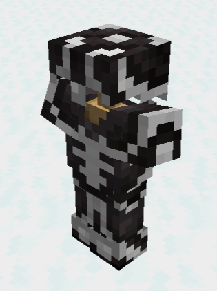
Se encuentra en las ciudadas antiguas.
Diseño de armadura marea
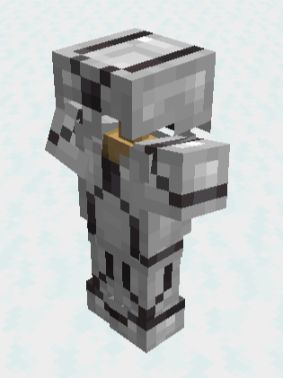
Se consigue al matar a unguardian anciano en los templo oceanicos.
Diseño de armadura hocico
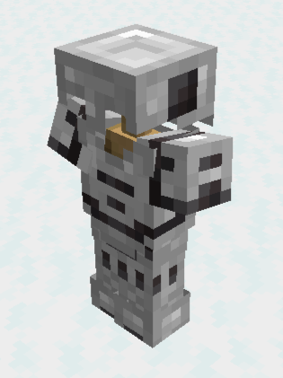
Se encuentra en los bastiones del nether.
Diseño de armadura costillas
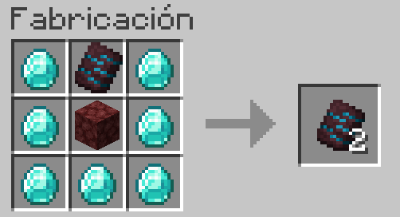
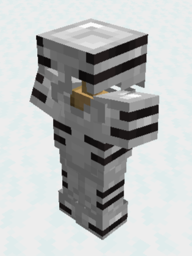
Se encuentra en las fortalezas del nether.
Diseño de armadura ojos
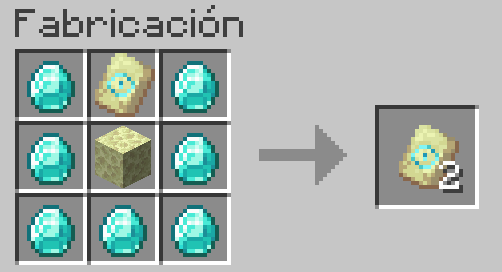
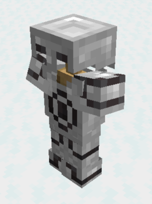
Se encuentra en los cofres de la salas de libreria del portal al End.
Diseño de armadura agujas
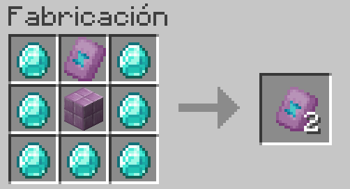
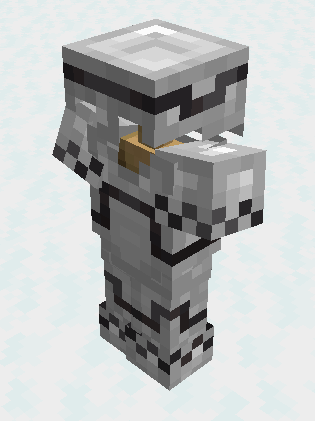
Se encuentra en los cofres de las End cities.
Diseño de armadura espiral
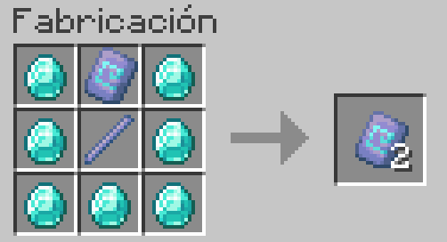
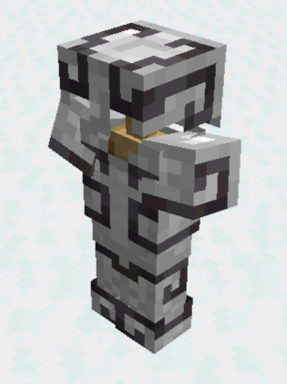
Se puede conseguir en las recompesas de la camaras de combate.
Diseño de armadura remaches
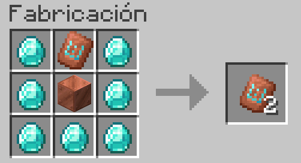
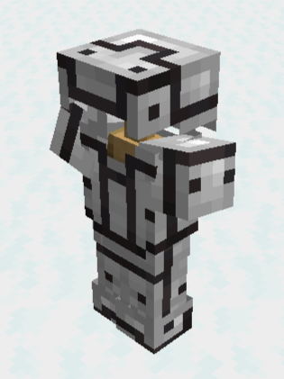
Se puede conseguir en las recompesas de la camaras de combate.
 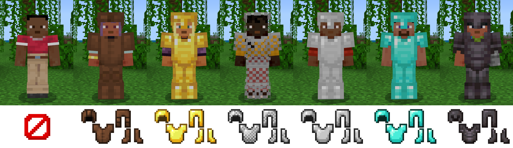
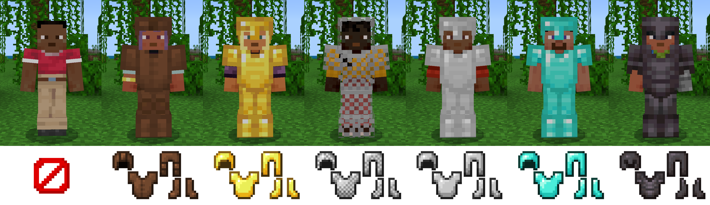


 )) representa un
4% de reducción de daño. Con los 20, el jugador tendrá un 80% de reducción de daño.
)) representa un
4% de reducción de daño. Con los 20, el jugador tendrá un 80% de reducción de daño.